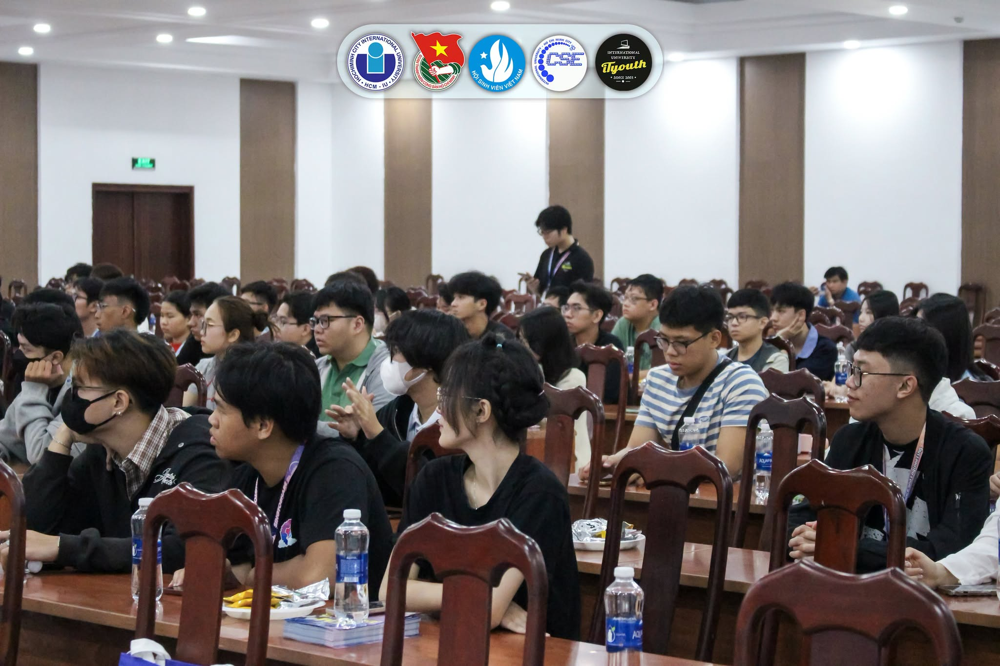

October 2025: New Paper Accepted
Our paper on real-time neural rendering was accepted for publication. Browse details on the Publications page.

Our laboratory is dedicated to advancing visual computing and interpretable machine learning. We design scalable algorithms for neural scene representations, 3D dynamic rendering, and robust explainable AI (XAI) models capable of operating in safety-critical computational environments.
Our paper on real-time neural rendering was accepted for publication. Browse details on the Publications page.
We received an academic infrastructure grant expanding our high-performance cluster computing capacity.
Applications are now open for graduate student researchers. Apply via our Join Us portal.